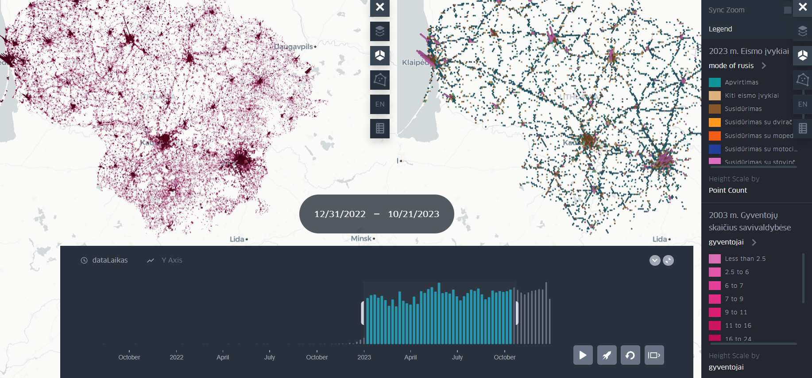
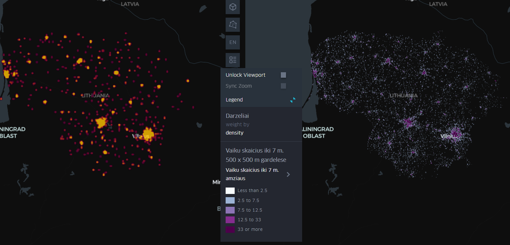
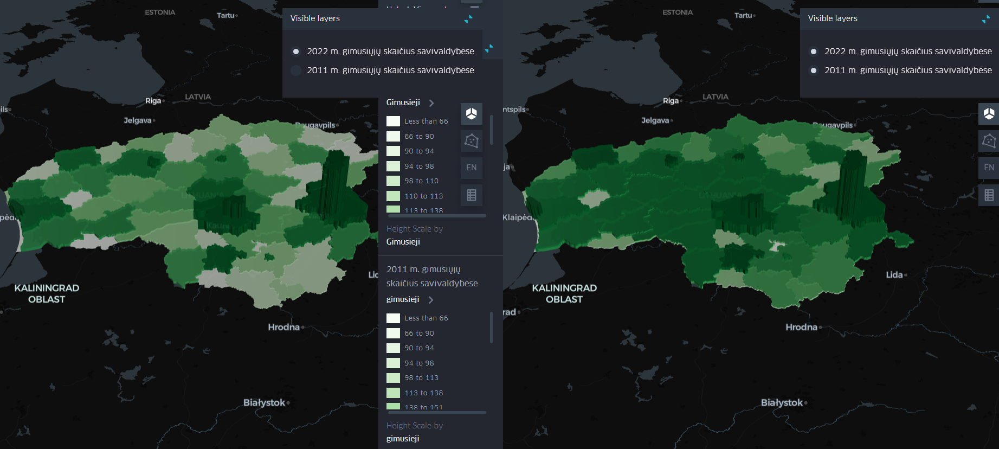

Svetainės paskirtis
Ši svetainė apima keletą GIS analizės pavyzdžių, susijusių su demografiniais duomenimis, paslaugų pasiskirstymu bei gyventojų dalyvavimu planavimo procese. Analizės pateikiamos interaktyvių žemėlapių forma, kad naudotojas galėtų greitai suprasti teritorinius skirtumus, paslaugų pasiekiamumą ar demografinius pokyčius skirtingose Lietuvos vietovėse. Paspaudus ant paveikslėlių, atsidarys interaktyvūs žemėlapiai naujame lange.

Informacinė skiltis
Analizuojami tiek nacionaliniai duomenys, tiek palyginamos konkrečios savivaldybės – Šakių rajonas ir Vilniaus miestas. Pateikiami vizualizacijų pavyzdžiai iš Kepler.gl, QGIS Cloud ir ArcGIS Online.

Interaktyvūs žemėlapiai
Gyventojų skaičius ir eismo įvykiai (Kepler.gl) – Map_1
Vaizduojamas Lietuvos savivaldybių gyventojų skaičius ir eismo įvykių tipai 3D formatu bei spalvų intensyvumu.

Darželiai ir vaikų pasiskirstymas Lietuvoje (Kepler.gl) – Map_2
Karštumo žemėlapis (Heat map) apie veikiančius darželius ir vaikų iki 7 metų amžiaus skaičiaus pasiskirstymas Lietuvoje.

Gimstamumo pokyčiai 2011–2022 m. (Kepler.gl) – Map_3
Pateikiamas palyginimas tarp 2011 ir 2022 m. gimusiųjų skaičiaus Lietuvos savivaldybėse, duomenys vaizduojami 3D formatu bei spalvų intensyvumu.
